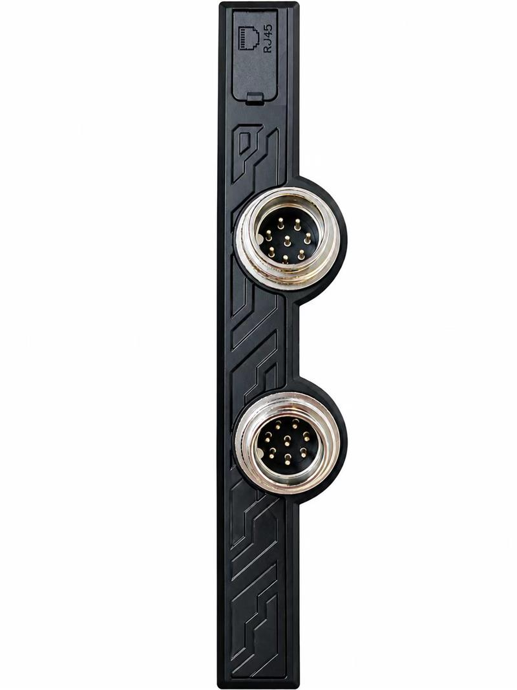
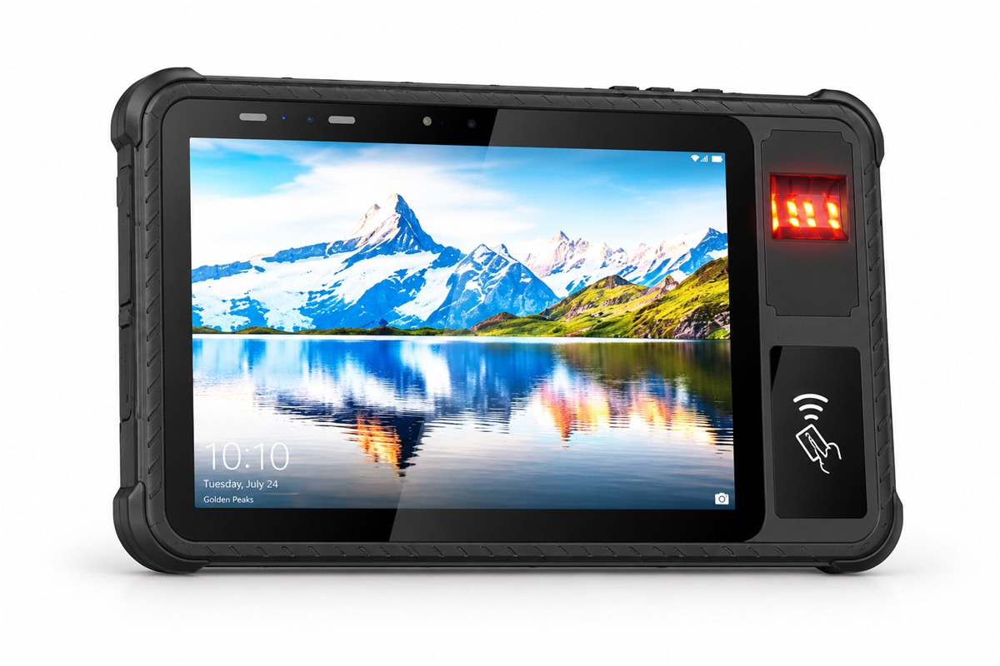
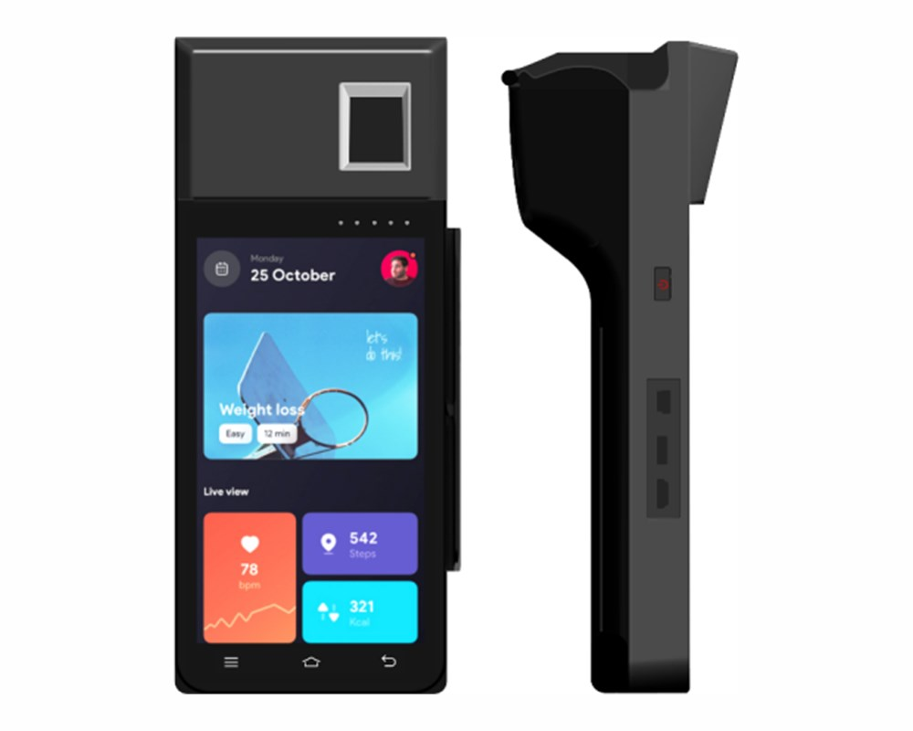
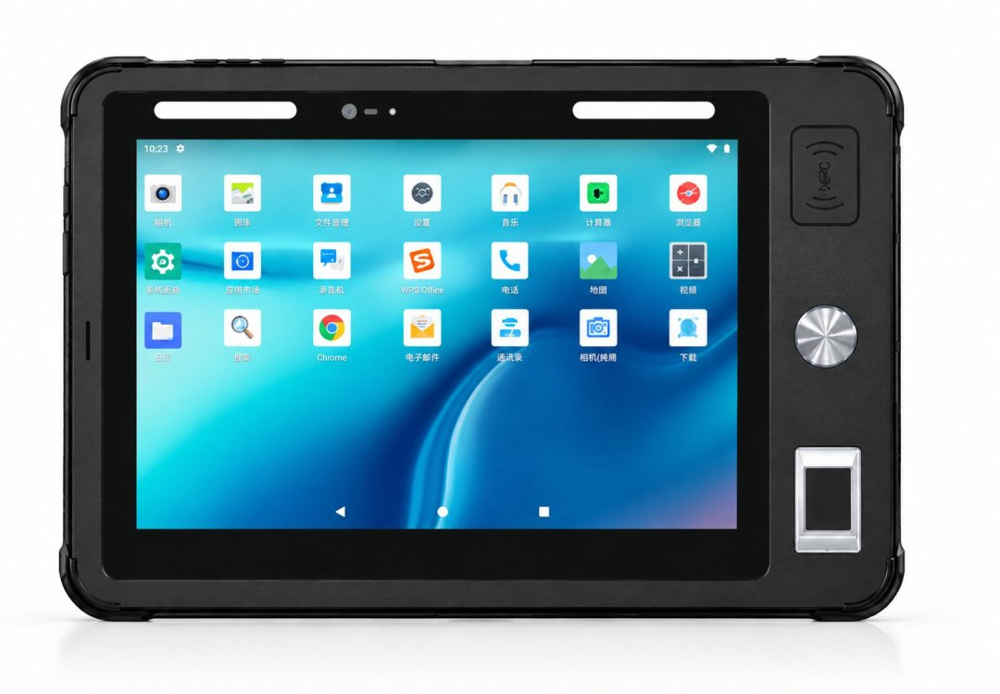
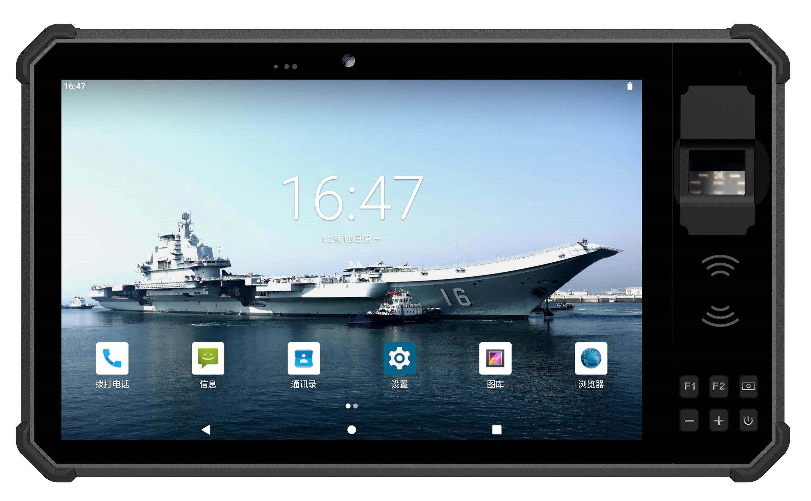
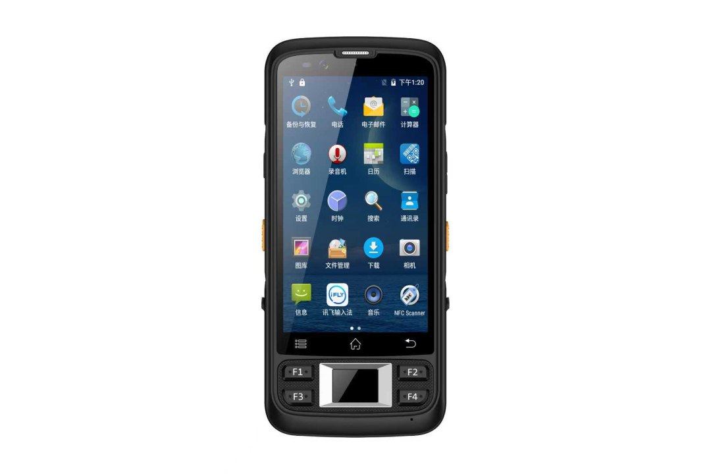
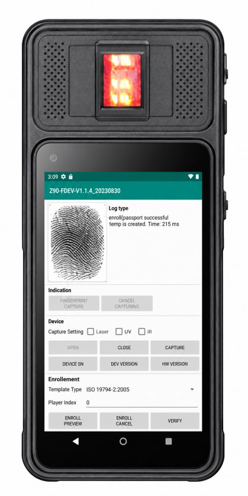

Industrial Tablet Aviation Connector and RJ45 Port
Threaded connectors against USB retention, which signals share a shell, and where the RJ45 port still wins…

Face Liveness Detection in Biometric Terminals: How to Specify It
Which capture architecture rejects a phone screen, the APCER and BPCER clause to put in a purchase order, and the field conditions that break the check…

Rugged Tablet for Cold Storage and Freezer Warehouses
Why freezer deployments fail on battery voltage sag and condensation rather than ruggedness, and the five tests worth running before buying a fleet…
What Is a Biometric Tablet?
The capture chain behind identity verification, 1:1 versus 1:N matching, honest modality trade-offs and a procurement checklist…
Biometric Terminals for Civil Identity Enrolment
A ten-year supply window, ISO/IEC 19794 record formats, centralised deduplication, data residency, and why fixed centres and mobile teams need different builds…
Biometric Terminals With Idemia, Suprema, Integrated Biometrics and HID Global Fingerprint Modules
Idemia, Suprema, Integrated Biometrics and HID Global fingerprint modules are now available across the Xinhong biometric terminal range. Compare the four capture technologies and how to specify one for your programme…

XH-600 Smart POS Terminal Buying Guide: How to Configure the Right Build
How to specify the XH-600: card paths, the built-in 58 mm printer, 4G and battery tier, the optional fingerprint module, and the certification package your market needs…
Hong Kong Electronics Fair 2026: Rugged Tablets, Vehicle Terminals and Handheld PDAs
What our team saw on the floor at HKCEC: the three questions buyers kept asking, why vehicle power and mounting decide a deployment, and the Android support question…
Industrial Handheld PDA: Scanner Engine, Battery Life and OS Support
How to specify an industrial handheld PDA: 1D vs 2D scan engine, battery sized for a full shift, Android lifecycle and MDM…
UHF RFID Reader Tablet: Read Range, Antenna Design and Tag Compatibility
What read range really depends on, regional frequency bands, circular vs linear polarisation, on-metal tags, duty cycle and how EPC data reaches your WMS…

Industrial Android Tablet: Specs, Android Lifecycle and Long-Term Supply
Android version and security patch cadence, GMS vs AOSP, Android Enterprise kiosk modes, serial and GPIO interfaces…
What Certifications Does a Rugged Tablet Need?
IP (IEC 60529), MIL-STD-810H, IK impact, CE, FCC, UKCA, RoHS and ATEX explained - what each one proves, what none of them cover…
How to Customize an Android Rugged Tablet
The five customization layers - hardware modules, Android OS and kiosk, SDK and MDM, branding, and certification re-validation - with MOQs, lead times…

Rugged Mobile Terminals for Law Enforcement: Field ID Checks, Evidence Capture and Deployment
What a police mobile terminal has to survive: in-vehicle heat and mounting, roadside ID checks, evidence capture with chain of custody, glove and sunlight operation…

Border Identity Verification Terminals: Document Authentication, Biometric Capture and Deployment
How border identity verification terminals work: document authentication through MRZ and chip reading, biometric capture, 1:1 versus 1:N matching, throughput…
Industrial Tablet Buying Guide 2026: How to Choose the Right Rugged Tablet
Complete industrial rugged tablet buying guide for 2026. Compare rugged vs consumer tablets, understand IP67/IP65 ratings, MIL-STD-810H drop testing, OS selection…
Android vs Windows Rugged Tablet: Which OS Should You Choose in 2026?
Android or Windows for your next rugged tablet deployment? Compare MDM support, barcode scanning SDKs, app compatibility, legacy Windows software, TCO, battery life…
IP65 vs IP67 vs IP68 vs IP69K: Rugged Tablet Protection Ratings Explained
Decode the IEC 60529 IP code for rugged tablets. Compare IP65, IP67, IP68 and IP69K side by side, learn what IP ratings do NOT cover (temperature, vibration,…
Rugged Tablet TCO: The True Cost of Industrial Tablets
Why the sticker price is only 30-40% of what a rugged tablet really costs. A complete Total Cost of Ownership framework for industrial deployments: acquisition,…
MIL-STD-810H Explained: What "Military Grade" Really Means
MIL-STD-810H is a test method, not a certification. Learn which methods matter (drop 516.8, vibration 514.8, thermal 501.7/502.7, humidity 507.6, salt fog 509.7),…
Warehouse Rugged Tablet Deployment: A Step-by-Step Rollout Plan
How to deploy rugged tablets in a warehouse without the usual failures. Device selection (tablet vs PDA), WiFi coverage planning, charging strategy, MDM…
Mobile Voter Registration with a Biometric Tablet
Fingerprint capture, ID reading, offline queuing and deduplication — what a mobile enrolment station needs from one rugged tablet.
What FAP 10, FAP 20 and FAP 30 Mean on a Fingerprint Tablet
Compare single-finger capture areas, calculated dimensions at 500 ppi, FBI certification and ISO fingerprint record formats.

Bank Card Issuance Control with a Biometric Handheld Terminal
Card issuance is an authorisation problem. How branch teams use fingerprint approval, NFC verification and an audit trail on the XH-100.